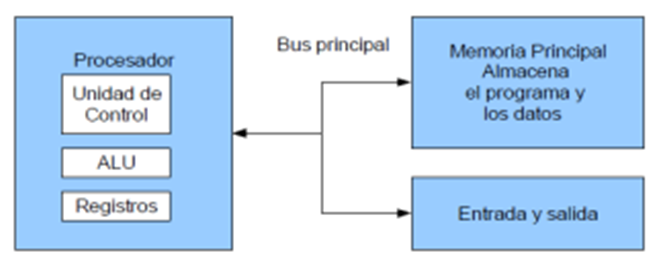
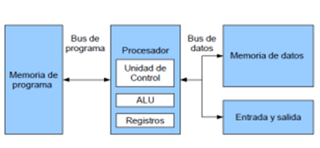

1.1.1 Clásicas
Estas arquitecturas se desarrollaron en las primeras computadoras electromecánicas y de tubos de vacío. Aun son usadas en procesadores empotrados de gama baja y son la base de la mayoría de las arquitecturas modernas.
Arquitectura Mauchly-Eckert (Von Newman)
Esta arquitectura fue utilizada en la computadora ENIAC. Consiste en una unidad central de proceso que se comunica a través de un solo bus con un banco de memoria en donde se almacenan tanto los códigos de instrucción del programa, como los datos que serán procesados por este.
Ejemplo de esta versatilidad es el funcionamiento de los compiladores, los cuales son programas que toman como entrada un archivo de texto conteniendo código fuente y generan como datos de salida, el código máquina que corresponde a dicho código fuente (Son programas que crean o modifican otros programas).
Desventajas:
Es que el bus de datos y direcciones único se convierte en un cuello de botella por el cual debe pasar toda la información que se lee de o se escribe a la memoria, obligando a que todos los accesos a esta sean secuenciales.

Arquitectura Harvard
Esta arquitectura surgió en la universidad del mismo nombre, poco después de que la arquitectura Von Newman apareciera en la universidad de Princeton. Al igual que en la arquitectura Von Newman, el programa se almacena como un código numérico en la memoria, pero no en el mismo espacio de memoria ni en el mismo formato que los datos. Por ejemplo, se pueden almacenar las instrucciones en doce bits en la memoria de programa, mientras los datos de almacenan en ocho bits en una memoria aparte.

En la actualidad la mayoría de los procesadores modernos se conectan al exterior de manera similar a a la arquitectura Von Newman, con un banco de memoria masivo único, pero internamente incluyen varios niveles de memoria cache con bancos separados en cache de programa y cache de datos, buscando un mejor desempeño sin perder la versatilidad.